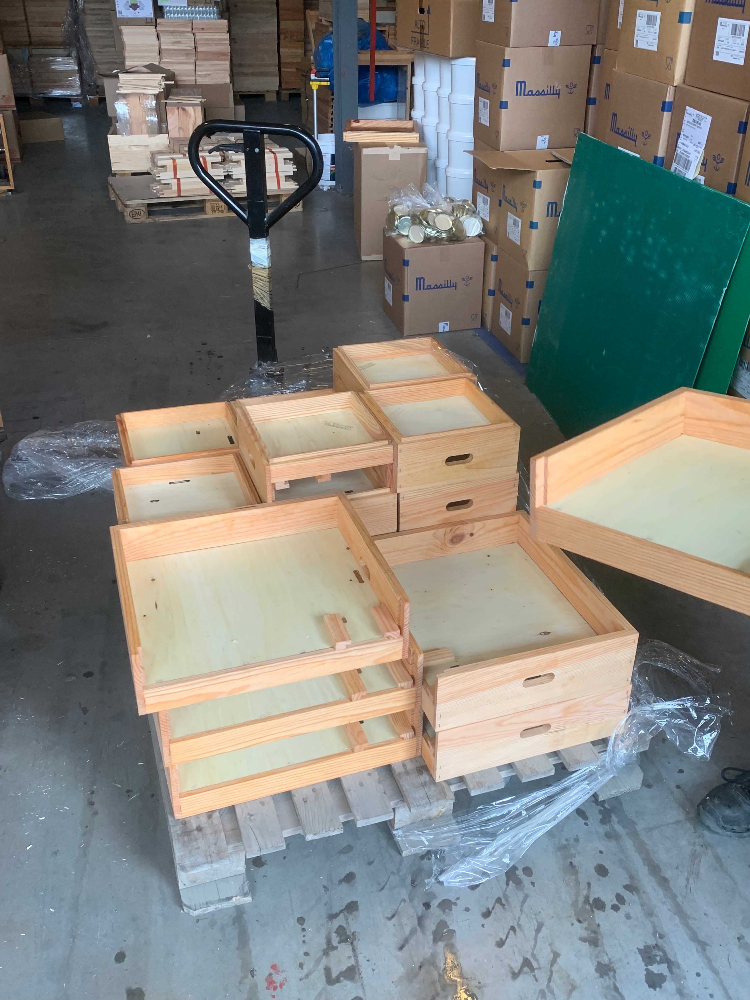
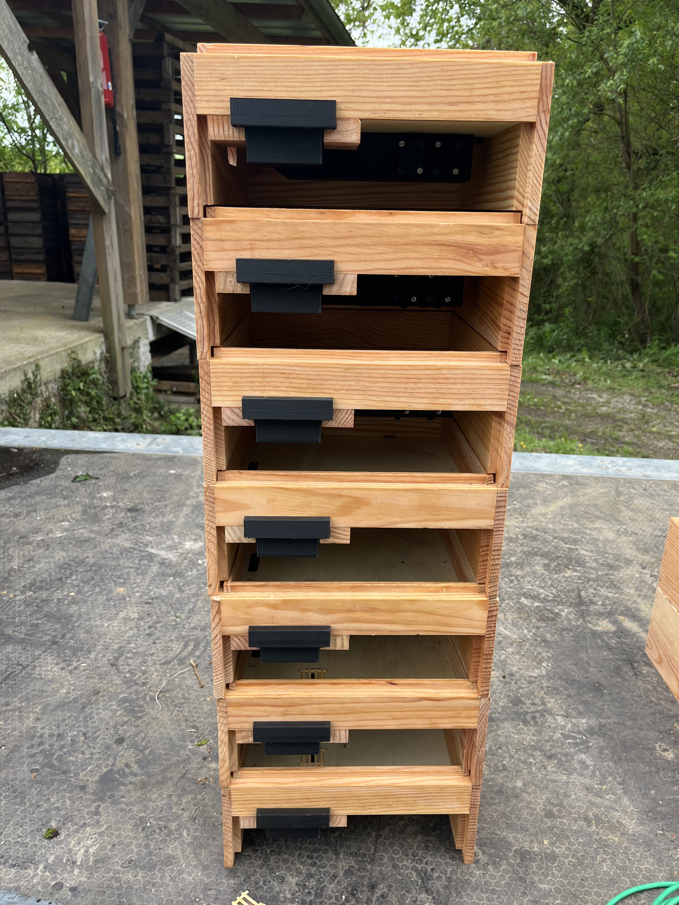
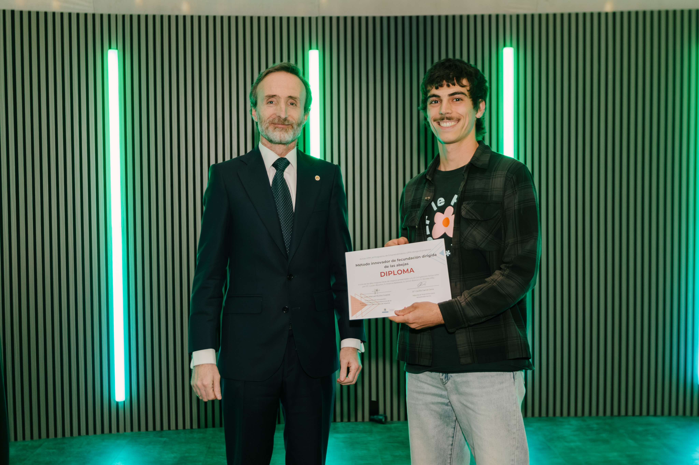
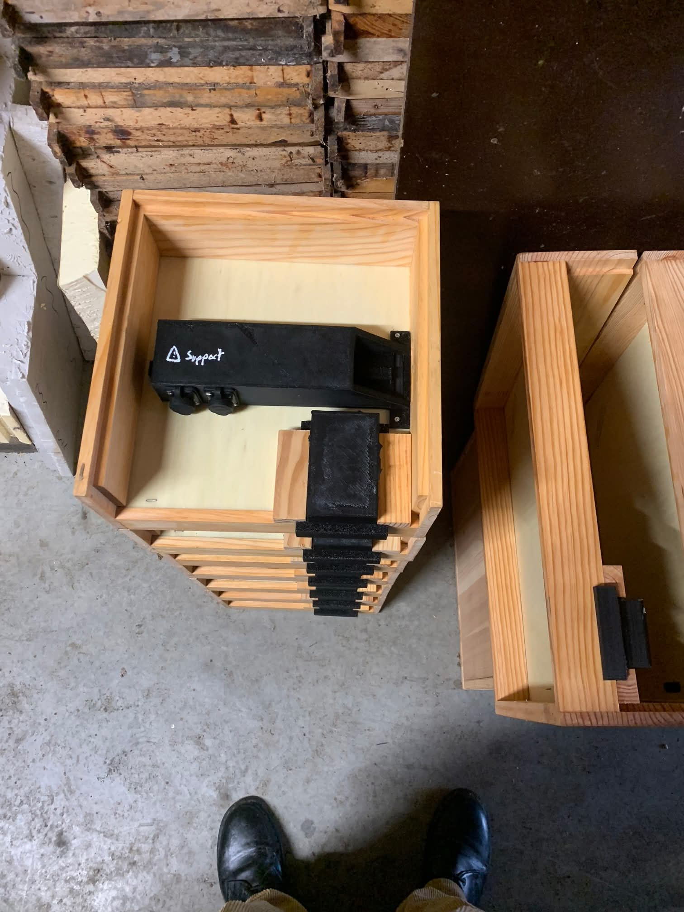
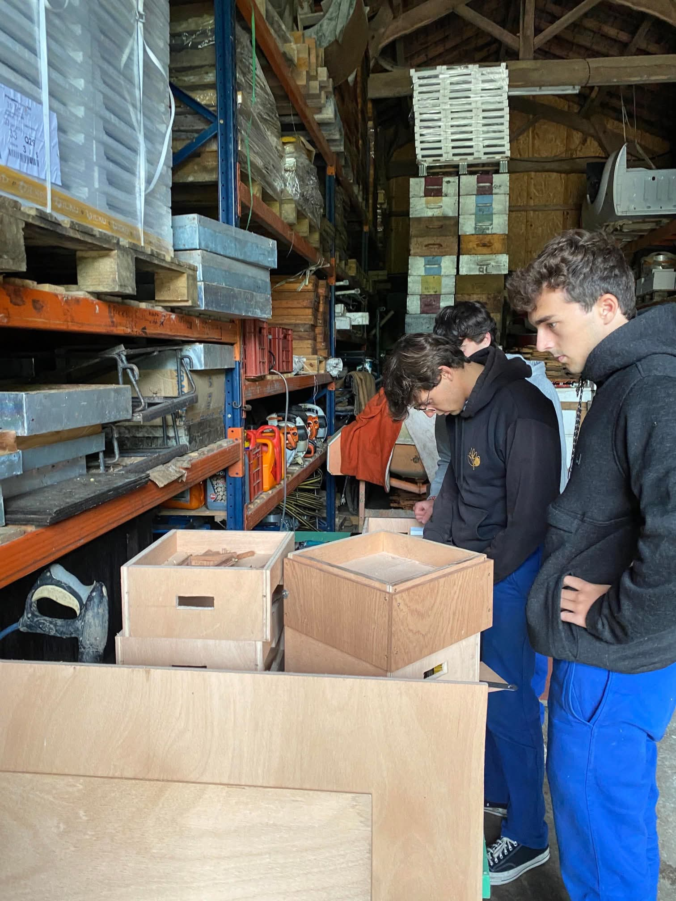
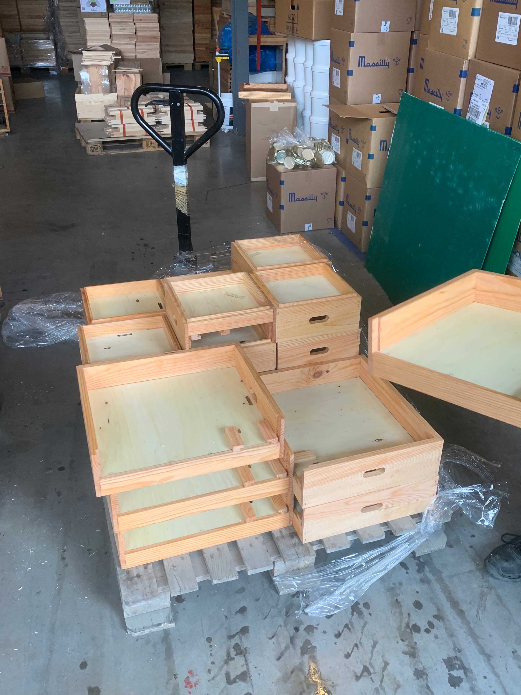
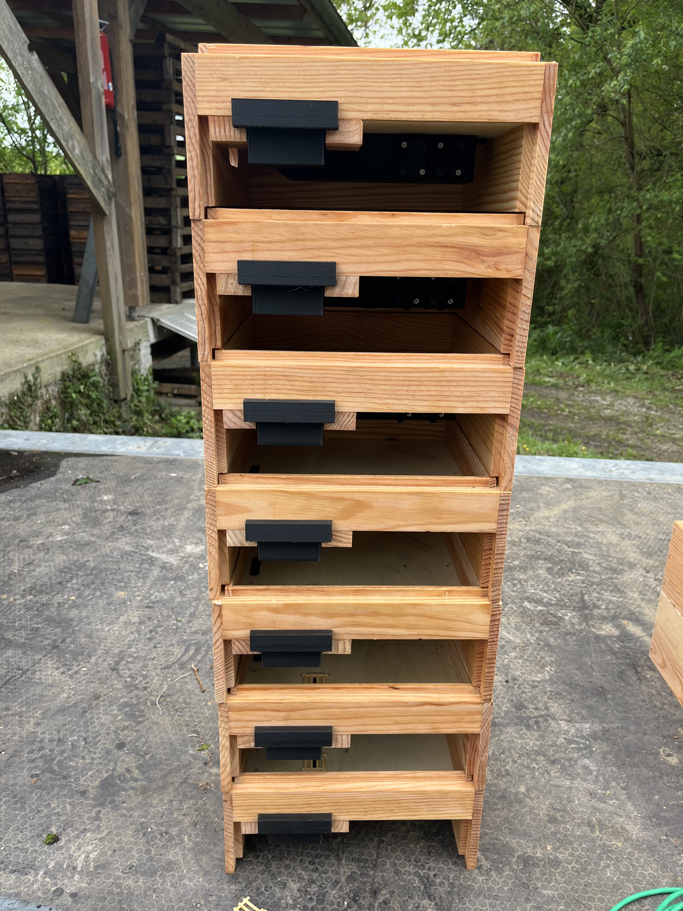
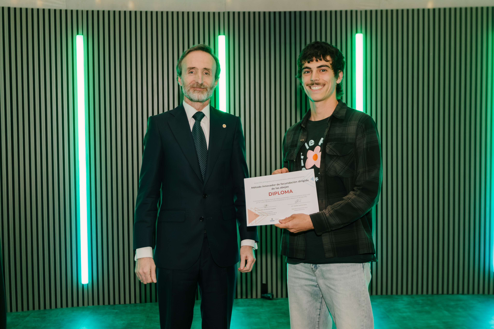
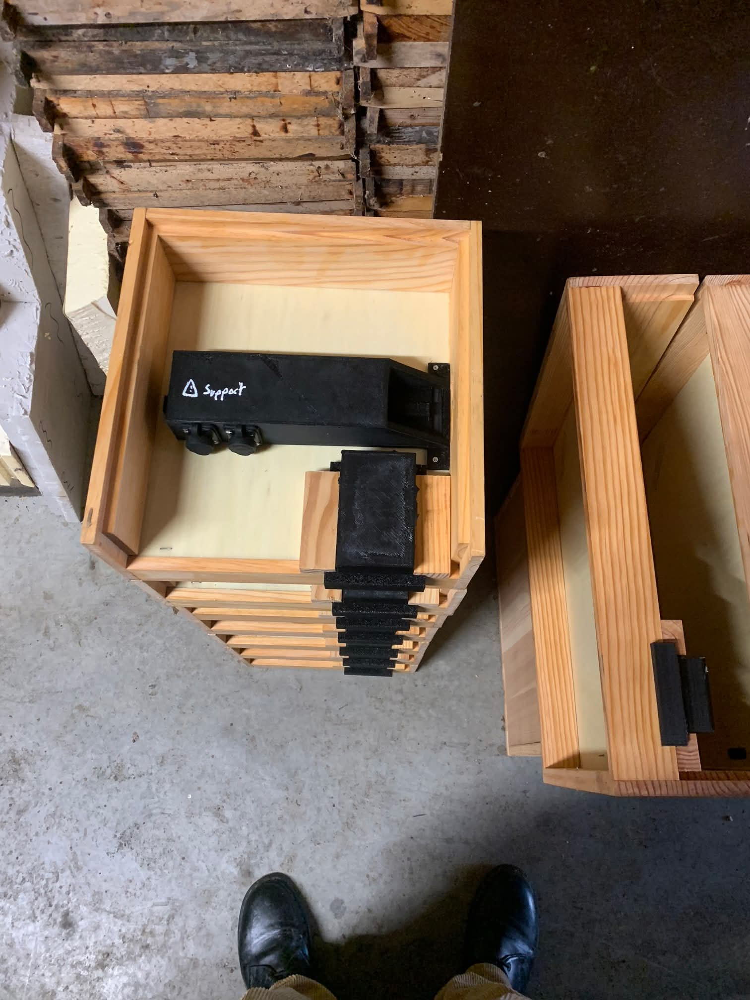
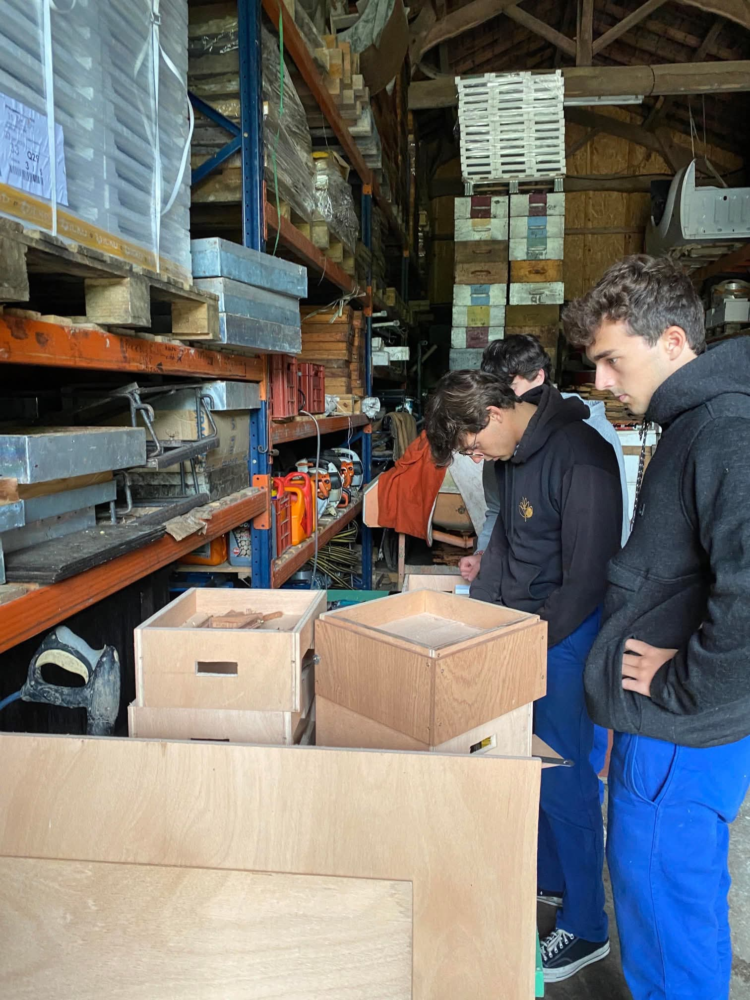

Projets Open Source en cours
Ici, vous trouverez tous les fichiers nécessaires pour comprendre, fabriquer et modifier le projet ADFCL. Notre objectif est de rendre la fécondation dirigée accessible à tous les apiculteurs, grâce à des outils documentés et libres d’accès.
Prototype actuel – Décalage de cycle de vie des abeilles
Ce projet vise à concevoir un système permettant d’ajuster le cycle de développement des colonies afin d’améliorer la gestion des fécondations. Il s’agit d’un travail en cours, ouvert à la communauté apicole.
Ressources techniques
Tous les plans, schémas et documents sources sont publiés sous la licence CERN-OHL-S v2 et accessibles librement ci-dessous :
- Plans de construction – module mâle (PDF)
- Plans de construction – module reine (PDF)
- Schéma électrique – ensemble (PDF)
- Schéma électrique – commande (PDF)
- Schéma électrique – bloc moteur (PDF)
Galerie du projet

 









N’hésitez pas à consulter notre page Actualités pour suivre les dernières avancées et mises à jour du prototype.